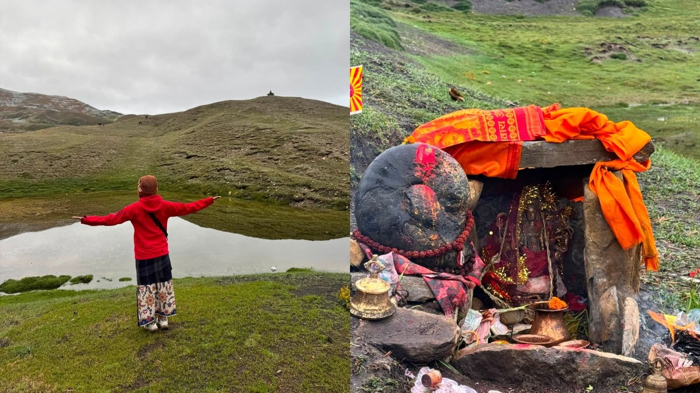
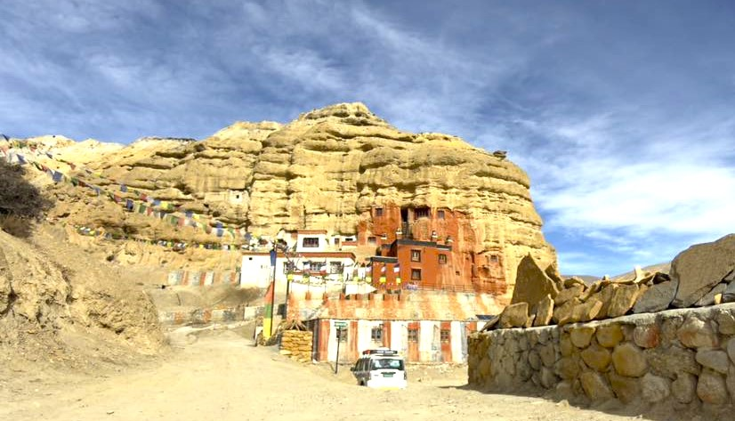
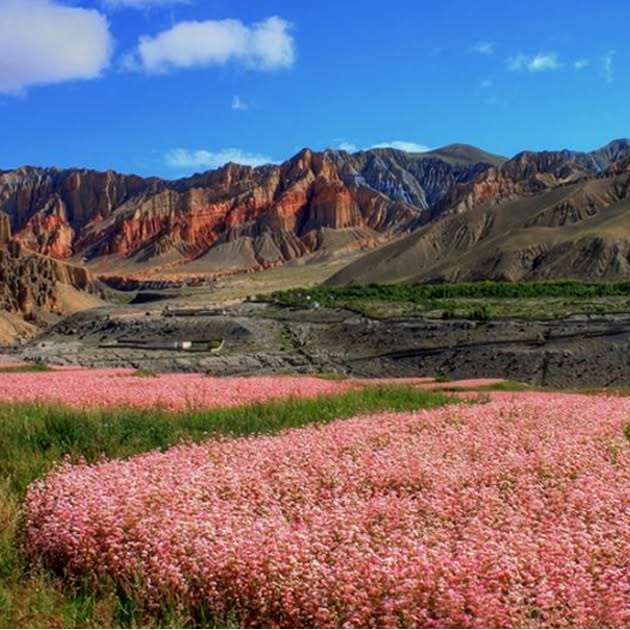
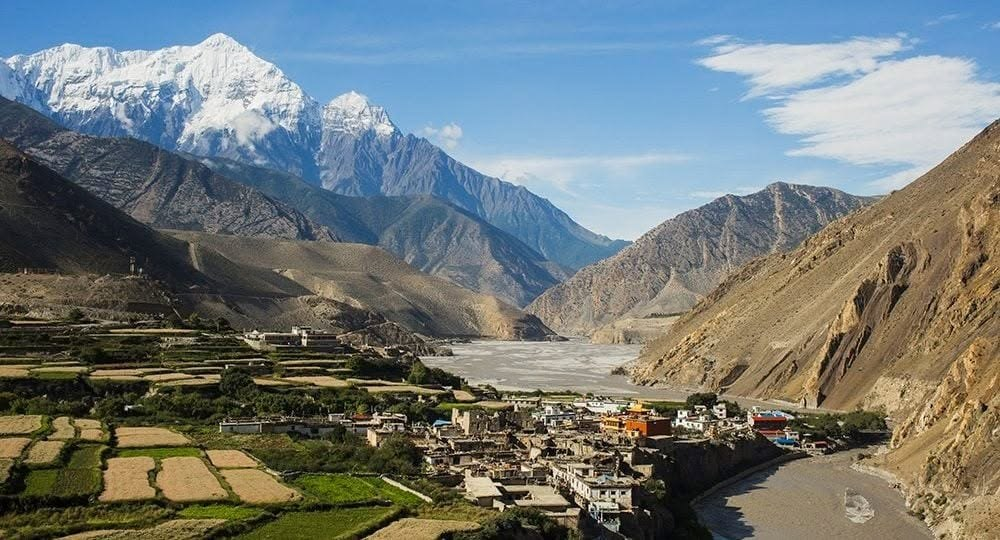

Mustang Damodar Kunda trek
The Mustang Damodar Kunda Trek is a remarkable off-the-beaten-path adventure into one of the most remote and spiritually significant landscapes of Nepal. Situated in the remote Mustang Region Trek, Damodar Kunda is a sacred group of high-altitude lakes surrounded by the rugged peaks of the Damodar Himal.





Key Trip Facts
Trek Overview
Trip Highlights
Mustang Damodar Kunda trek Overview
The Mustang Damodar Kunda Trek is a remarkable off-the-beaten-path adventure into one of the most remote and spiritually significant landscapes of Nepal. Situated in the remote Mustang Region Trek, Damodar Kunda is a sacred group of high-altitude lakes surrounded by the rugged peaks of the Damodar Himal. This extraordinary journey combines Himalayan wilderness, ancient Buddhist heritage, Hindu pilgrimage traditions, dramatic Trans-Himalayan landscapes, and the distinctive culture of the Mustang region.
Unlike the more popular trekking routes in Nepal, the Damodar Kunda Trek takes you deep into a remote and less-traveled corner of the Himalayas. The trail passes through arid valleys, windswept mountain passes, traditional settlements, ancient monasteries, hidden caves, and spectacular Himalayan terrain. Along the journey, trekkers can enjoy impressive views of the Damodar, Annapurna, and Nilgiri mountain ranges while experiencing the unique landscapes created by the rain-shadow effect of the Himalayas.
Sacred Damodar Kunda
Damodar Kunda holds enormous religious importance, particularly among Hindu pilgrims. According to Hindu tradition, the lakes are regarded as sacred, and bathing in their holy waters is believed to provide spiritual purification and liberation from sins. During the annual pilgrimage season, devotees from different parts of Nepal and India make the challenging journey to the lakes to perform religious rituals and prayers.
The spiritual atmosphere of Damodar Kunda, combined with its remote Himalayan setting, makes this trek a truly distinctive pilgrimage and adventure experience.
Explore the Remote Upper Mustang
The Mustang Damodar Kunda Trek provides an opportunity to discover the extraordinary character of Upper Mustang beyond its better-known trekking destinations. The region is famous for its barren cliffs, colorful rock formations, deep valleys, ancient settlements, monasteries, and caves carved into the Himalayan landscape.
The journey also introduces trekkers to the traditional lifestyle and cultural heritage of communities living in the high Himalayas. Depending on the trekking route, you can encounter the customs and traditions of Thakali, Gurung, Magar, and Tibetan-influenced communities, each contributing to the cultural diversity of the region.
Ancient Monasteries, Caves, and Himalayan Culture
One of the highlights of the Damodar Kunda Trek in Nepal is the opportunity to explore centuries-old cultural and religious heritage. Ancient monasteries and meditation caves can be found throughout the Mustang region, reflecting the strong influence of Tibetan Buddhism.
The dramatic surroundings add another dimension to the experience. The landscape gradually changes from green valleys and river corridors to dry, dessert-like terrain as you enter the rain-shadow region of Mustang. This contrast makes the trek particularly appealing to travelers looking for landscapes that are different from Nepal's typical green mountain trails.
Journey Through Kagbeni and Muktinath
The trek can also be connected with culturally and religiously important destinations such as Kagbeni and Muktinath. Kagbeni is an ancient settlement located near the confluence of the Kali Gandaki and Jhong rivers and serves as an important gateway toward Upper Mustang.
The Kali Gandaki Valley is also renowned for Shaligram stones, which are considered sacred by Hindus and associated with Lord Vishnu. Further along the region lies Muktinath, a revered pilgrimage destination for both Hindus and Buddhists. Combining these destinations with Damodar Kunda creates a fascinating journey through some of the most important spiritual landscapes of the Himalayas.
Scenic Flight and Trekking Adventure
The adventure usually begins with a scenic flight from Pokhara to Jomsom, offering spectacular views of the Himalayan landscape. From Jomsom, the journey continues through the remote valleys and high-altitude terrain of Mustang.
Depending on the chosen Damodar Kunda Trek itinerary, the route can involve long trekking days, challenging high-altitude terrain, remote camps, and mountain passes. The demanding nature of the journey is precisely what makes this trek rewarding for experienced trekkers seeking solitude and adventure away from Nepal's busier trekking trails.
Restricted Area and Special Permit
The Damodar Kunda region is located within a restricted trekking area of Nepal. Trekkers therefore need the appropriate special trekking permit and must follow the regulations established by the Government of Nepal. Because of the remote nature of the region, the trek should be organized through a registered trekking agency like Nepal Unique Treks with experienced guides and proper logistical support.
Our team at Nepal Unique Treks can assist with the necessary permits, transportation, experienced trekking guides, accommodation or camping arrangements, meals, and other logistics required for a safe and enjoyable journey.
Best Time for Damodar Kunda Trek
Choosing the right season is important for the Damodar Kunda Trek because the route reaches remote and high-altitude areas with unpredictable mountain weather.
The summer and autumn seasons are generally considered suitable periods for exploring the Damodar Kunda region. The Mustang area lies in the rain shadow of the Himalayas, making it comparatively drier than many other trekking destinations in Nepal during the monsoon season. Autumn generally provides stable weather, clear mountain views, and excellent trekking conditions.
However, conditions can change rapidly at high elevations, so trekkers should always be prepared for cold temperatures, strong winds, and changing weather.
Why Choose the Mustang Damodar Kunda Trek?
The Mustang Damodar Kunda Trek is ideal for travelers who want to experience a different side of Nepal. Rather than following a crowded trekking route, this adventure takes you into a remote Himalayan environment where spirituality, ancient culture, and wilderness exist side by side.
From sacred high-altitude lakes and ancient monasteries to dramatic cliffs, barren valleys, and magnificent mountain panoramas, every section of the journey offers something unique. For trekkers interested in Upper Mustang, Himalayan pilgrimage, Tibetan-influenced culture, remote mountain adventures, and off-the-beaten-path trekking in Nepal, Damodar Kunda is an exceptional destination.
With Nepal Unique Treks, you can experience this extraordinary region with carefully planned itineraries, knowledgeable local guides, reliable logistics, and professional trekking support. Let us help you discover the sacred lakes and hidden landscapes of Mustang on an unforgettable Damodar Kunda Trek in Nepal.
Mustang Damodar Kunda trek Itinerary: Day by Day
24 Days program for Mustang Damodar Kunda trek. Daily timings and sequences remain flexible according to weather, flight operations, and group pace.
Day 1: Welcome in Kathmandu, Nepal, 1345m
Approx. 1,345 m / 4,413 ft
Welcome to Tribhuvan International Airport in Kathmandu, Nepal Unique Treks Guide will transfer you to the Hotel by private car; it takes 6.5 km and 30 m from the Airport. Check in at the Hotel and Overnight sleep at the Hotel in Thamel.
Day 2: Sightseeing in Kathmandu and Trek gear Preparation.5 hrs. 1345m
Approx. 1,345 m / 4,413 ft
After breakfast, Nepal Unique Treks will meet with you in the Hotel, and complete the official paperwork, permits, and trekking arguments. Introduce with the Tour Guide and start Kathmandu Valley Sightseeing. Our Tour guide will take you to the UNESCO World Heritage and historic landmarks like the Pashupatinath Hindu Temple, Bouddhanath, Swayambhunath Stupa (Monkey Temple), Patan, and Basantapur (Kathmandu Durbar Square), etc. In the evening Meet with the Trekking guide and check the list of trekking gear that is important for the Upper Mustang Damodar Kunda Trek. Overnight sleep at the Hotel in Thamel.
Day 3: /9 hours’ drive from Kathmandu to Pokhara, 810m
Approx. 810 m / 2,657 ft
Early in the Morning pack your bag and start driving to Pokhara by tourist bus. Today, you will drive through the Prithvi Highway and via the white water rafting river. During the drive, you will see beautiful villages, green hills, the river, and agricultural fields. About 8/9 hours’ drive, you will arrive in Pokhara. Check in at the Hotel, walk around Lakeside and have dinner yourself, then sleep at Pokhara Hotel.
Day 4: Flight from Pokhara to Jomsome and Trek to Kagbeni Village, 30 Minute flight and 3 hours Trek.
Approx. 2,800 m / 9,186 ft
Early morning drive to the Airport 25-minute flight to Jomsome Bazar. During the flight, you can see scenic views of the Annapurna and Dhaulagiri Himalayan range. Mountain weather is changeable and unpredictable, so sometimes it can be delayed due to bad weather. From Jomsom, we will start a trek to Kagbeni village and spend the night at the Guesthouse. If you like to drive by road, then it takes 8/9 hours, 185 km from Pokhara.
Day 5: Kagbeni to Chele 3050 meters 6/7 hours trek
Approx. 3,050 m / 10,007 ft
Breakfast in the Guest House, then start a trek. We will visit the Monastery and walk through the village. Check our special trekking permits, then walk continually following the Kaligandaki River valley. You will have lunch near Chuksang village. The windy trails offer magnificent views of Nilgiri, Dhaulagiri, Dhampus, and Tukuche peaks, and the unique, colorful landscapes of Mustang. Overnight sleep at the Guest house in Chele.
Day 6: Chele to Syangboche 3850 meters 6/7 hours trek
Approx. 3,850 m / 12,631 ft
A beautiful sunrise leads your day, and it gives outstanding views of the Himalayas and the landscape of Mustang. After Breakfast journey starts from Chele and goes through the local villages, rocky, dusty trails, and narrow canyons. Trekking from Chele to Syangbuchhe will be hard to compare to other days. Before Arrive Camp, we have to cross the two passes, which are called by name, Taklam La 3,624m and Dajori La 3,660m. After lunch, you have a chance to visit a Buddhist religious place, which is called the Ranchung Chungsi Cave of Mustang. This cave belongs to the Buddhist religion. In the 8th century, Guru Padmasambhava traveled in Mustang and meditated in this cave, which is why this cave is very important for the locals of Mustang and in Buddhism. From the cave, another one and a half hour's trek, you will arrive in Syangbuchen Village.
Day 7: Syangbuche to Ghami 3520 meters 6/7 hours Trek
Approx. 3,520 m / 11,549 ft
The trek starts at Ghami. We will pass through beautiful landscapes, Chorten, Mountain View, and arid dessert-like terrain. In the early evening, we will visit the ancient, Historical monastery of Ghami. The trek from Syangbuche to Ghami is a beautiful and rewarding experience, with the natural beauty and cultural heritage of Mustang.
Day 8: Ghami to Tsarang (Charang) 3560 meters 6 hours Trek
Approx. 3,560 m / 11,680 ft
During the trek from Ghemi to Charang, you will see fabulous mountain views, the oldest ancient Buddhist monasteries, the Mani wall, the Chorten, and unique, colorful landscapes. The day starts from Ghami and walks downhill to Ghami River and crosses the suspension bridge, then we will climb along the longest Mani wall of Mustang Valley, Chortens, Mani wall, and the red cliff of Dhakmar is today’s main attraction. Before reaching rich Tsrang, we must cross Chinggel La pass, 3870 meters high above sea level. We can see the beautiful scenery around Charang / Tsarang Village, which is truly amazing. There is rich culture and natural beauty, and the People's lifestyle is the jewelry of Mustang, Nepal. Early afternoon, you may be able to visit Monasteries and around the village, and overnight sleep at a Guest House.
Day 9: Tsarang to Lo Manthang 3840 meters 5 hours Trek.
Approx. 3,840 m / 12,598 ft
Today is the main and final day to arrive at our highlight destination. After breakfast, the trek from Tsarang to “Lo Manthang, and during the trek, it will offer stunning views of mountains, and cross the Lo la Pass 3960m, from where you can see the valley of Lomanthang. Today's trek from Tsarang is easier than the day. Check in at the Guesthouse, take a lunch, and relax. Around 3 pm, your guide will show you the Historical monument, Chorten Monastery, Museum, and famous Wall City, which is made of traditional mud-brick houses, narrow alleys, and colorful Buddhist prayer flags fluttering on the roof of the King Palace. Lo Manthang is the capital of the former Kingdom of Mustang, where you can see Tibetan Buddhism, Culture, tradition, and Tibetan-style architecture in monasteries, Chorten, and houses. Sightseeing of the walled city and kingdom of Mustang, enjoy the dinner, then sleep at the guesthouse.
Day 10: Day trip to Chhoser by horse or walk on choice
Approx. 3,840 m / 12,598 ft
After breakfast, your guide will manage the horse to go to Chhoser cave, towards the Garphu & Kora la border. When you reach Chhosar village, it will offer a unique and traditional way of life. There are people's daily activities, and monks spending time in the Monastery. Visiting Ancient monasteries, Historical caves, and their local villages. The guide will arrange lunch on the way, then back to the guesthouse. Take a tea or coffee and relax during your time in the Guesthouse. In the early evening, attend the puja ceremony in the Monastery and explore around there from the rooftop. Dinner and sleep at the guesthouse.
Day 11: Lomanthang to Yara 3900 meters 6/7 hrs. Trek
Approx. 3,900 m / 12,795 ft
Early morning, visit the monastery for prayer. After Breakfast, our journey to Yara is located to the southeast of Lo Manthang. Today’s walking trails are mostly flat and up and down. During the day, we can see beautiful grasslands and rocky terrain. After passing 3900 m Hils and some local villages, you arrive in Yara, which is 3650 m above sea level. Eventually, Yara village is in a remote settlement surrounded by beautiful barren hills, colorful landscapes, and ancient Buddhist Monasteries, Chorten, and Caves, and the people's lifestyle is a major attraction of this village. Yara village is famous for its traditional rocky mud houses, unique Tibetan architecture, and cultural heritage. Yara is the most well-preserved village by the Nepal Government in the Mustang region.
Day 12: Acclimatization and Explore Luri Gompa. 3840m, 4 hours Trek.
Approx. 3,840 m / 12,598 ft
After breakfast in the Tea House, your Day leads to a visit to Luri Gompa, which is a 400-year-old cave monastery, it takes 4 hours round trip from Yara village. Today, walking to Luri Gompa will be great for acclimation and a religious visit. Hike back to Yara and take a lunch and relax around there, Overnight sleep at Yara village.
Day 13: Trek to Yara to Ghuma Thanti 4870 meters, 6/7 hours Trek.
Approx. 4,870 m / 15,978 ft
The trek Guide leads to Ghuma Thanti via Yak herder’s trails, and you will see a magnificent view from the top of the 5010m pass, Ghuma Thati is the pilgrims' rest place on routes to Holy Damodar Kunda, Overnight stay in the camp side with surrounding snow peaks views. The distance to Ghuma Thati from Yara is 6 km and it takes 6 hours approximately.
Day 14: Ghuma Thati to Damodarkund 5400 meters
Approx. 4,890 m / 16,043 ft
The Morning departs from Ghuma Tanthi to Damodar Kunda. The trails follow a wide-open valley of grassland and continuously walk ahead, close to Kyamu la pass, 5300 m, and downhill to Batsyak. From this wild area of Batsyak, then slowly trek to Damodar Kund. You will see beautiful scenery from the top of a high ridge, and glamorous views of Bhirkuti Peak, Damodar Himal, and Saribung Peak. Then a few hours’ descent to Damodar Kund, Enjoy the evening surrounding the holiest lake of Damodar Kund. The Nepal Unique Treks team settled the camp near the lake. It will be romantic, and enjoy the moment with Hot drinks and overnight sleep at Damodar Kunda.
Day 15: Explore around Damodar Kunda
Approx. 4,890 m / 16,043 ft
If you are religious and believe in a nature god, your guide will prepare for the worship and prayers in the holy lake. We believe your wishes will come true one day. Either as travelers or nature lovers, you may enjoy the moment with a magnificent view of the surrounding Damodar Kunda. Your Trek guide will help you walk around there.
Day 16: Damodar Kunda to Ghuma Thati 4870m, 6/7 hours Trek.
Approx. 4,870 m / 15,978 ft
Early in the morning, walk around the holy lake and enjoy the beautiful sunrise, then take breakfast, pack your bag, and retrace the journey back to Ghuma Thanti. Today, it feels easy to trek to lower altitudes because you are already acclimatized to high altitudes. Today, trek on the same route through summer pasture areas, there is a chance to see some wildlife like a rare snow leopard, and blue sheep, and Overnight sleep at Ghuma Thati.
Day 17: Ghuma thati to Yara 3900 meters 6/7 hours Trek
Approx. 3,900 m / 12,795 ft
Ghuma Thati to Yara 3900 meters 6/7 hours Trek
Day 18: Yara to Tangye 3240 meters, 7 hours Trek. `
Approx. 3,240 m / 10,630 ft
The journey starts at Tangye village, and it leads with relatively flat trekking trails, where you must walk downhill sections to the Lower Mustang. + Today you will capture the dramatic cliffs of colorful hills, deep canyons, Chortens, and a Buddhist monastery. Tangye is also the remote village of the Mustang district with ancient ruins and a traditional way of life influenced by Tibetan culture. Local people of Tangge depend economically on agriculture with a traditional farming method, and rely on animal husbandry; they grow barley, wheat, potatoes, and buckwheat. They are proud of their traditions and way of village life. The Yara to Tangye journey is an unforgettable experience through the mystical mustang region of Nepal.
Day 19: Tangye to Chhusang 2980 meters, 6 Hours Trek.
Approx. 2,980 m / 9,777 ft
The Tangye to Chusang journey is 7 hours, and trekking through stunning landscapes and beautiful scenery will motivate you to reach the day's final destination. Finally, we arrived in Chhusang village, which is located on the banks of the Kali Gandaki River, and witnessed the daily life of local people who live in this remote part of Nepal. Around the Chhusang village, you can see a beautiful mountain surrounded by towering red cliffs. Early afternoon walk around the bank of the Kaligandaki River, enjoy the view, and try to find some Saligram on your shelf. Overnight sleep at Chuksang Guest House.
Day 20: Chuksang to Muktinath 3760 meters 7 hours Trek.
Approx. 3,760 m / 12,336 ft
Today, we are going to explore Muktinath Temple, which is a sacred site for both Hindu and Buddhist religions. After breakfast in the Guest house, start a trek from Chhusang to Muktinath, which is a challenging and rugged, windy path, but the views are mesmerizing, and the experience is worth it. The trip begins with a long, gradual ascent in challenging terrain and a final steep climb to Gyu la, 4077 meters. After crossing the pass treks descend towards Jhong village to Muktinath. In Jhong village, we can see the historical and ancient Palace, which is broken already, but still, we can see some broken walls. They have traditional houses, Chortens, interesting cultures, and monasteries. After Lunch in Jhong Village, another 40-minute trek to Muktinath. Tonight, stay in Muktinath, which is 3,762 meters above sea level. Muktinath is the main junction after the Thorong La pass, 5416 m. Most of the domestic travelers and Indian people visit Muktinath as a holy Temple. They will spend the overnight, the next day by bus or by trekking, descending to Jomsome.
Day 21: Muktinath to Jomsom 2750 meters / 9022 feet
Approx. 2,750 m / 9,022 ft
Early Morning walk around Muktinath Temple, Visit Monastery in Rani Pouwa, then back to the guesthouse for Breakfast. There are two options to go to Jomsome: by trekking and by Jeep. If your feet are not tired, then trek to Jomsome via Lubra village, which is the only village in Nepal they following Bond Religion. Or if you feel tired from trekking and have pain in your leg, then go by Jeep or Bus, Celebrate the Last Day trek party with your staff, and overnight sleep at the Guesthouse.
Day 22: Flight /drive back from Jomsom to Pokhara
Approx. 810 m / 2,657 ft
Early morning flight to Pokhara and spend quality time and luxurious accommodation. If you go to Pokhara by bus, it will take 10 hours. Flight is the fastest option to go to Pokhara by plane, it takes 25 minutes.
Day 23: m, Flight / 8 hours drive to Kathmandu
Approx. 1,345 m / 4,413 ft
Today you’ll drive back to Kathmandu with a scenic drive that takes around 8/9 hours to reach by jeep, car, or tourist bus, and there is another option by flight, which takes 25 minutes from Pokhara to Kathmandu. According to your budget and time, we can customize the facility and service. Before completing the trip, please let us know by jeep or by flight. Upon arrival in Kathmandu, you’ll check into the hotel, and use your free time to rest, relax, and explore around Thamel, for souvenir shopping and relaxation. At 6 pm, you are invited by Nepal Unique Treks for a farewell dinner in the evening to celebrate the successful completion of the trip.
Day 24: Transfer to airport for departure
Approx. 1,345 m / 4,413 ft
Finally don the Nepal Trip, our representative will drop you off at the International airport, 3 hours before the flight schedule.
What is Included (Regular Package)
What is Excluded
Booking Dates & Availability
Packing List for Mustang Damodar Kunda trek
Essential Info: Down jackets and sleeping bags can be rented/arranged per package inclusions.High-Altitude Trail Gear (6 items)
Cold-Weather Layering System (5 items)
Sleep, Health & Permits (3 items)
Read before you book: Mustang Damodar Kunda trek
Practical logistics derived directly from this package's route facts, inclusions, and elevation profile.
Accommodation & Meals (Hotel, Lodge & Tea House)
Accommodation follows the package grade (Hotel, Lodge & Tea House) in Kathmandu and along the Mustang route. Check your package Includes section for included meals and Kathmandu hotel nights.
Permits & Local Logistics
Transportation is arranged via Flight, Private Car. Applicable permits listed in the package inclusions are arranged by Nepal Unique Treks prior to departure.
Route Difficulty & Elevation (5,400 m)
Mustang Damodar Kunda trek is rated Adventurous with a maximum elevation of 5,400 m. Follow your guide's pacing and stay hydrated throughout the 24 Days itinerary.
Best Time to Visit (Spring, Summer and Autumn)
Recommended operating season on the source page: Spring, Summer and Autumn. Additional official notes from the source page follow below.
Traveller Useful Information
The Mustang Damodar Kunda Trek is considered a challenging and strenuous trek in Nepal, best suited to experienced trekkers or physically fit adventurers who are comfortable with high-altitude and remote mountain environments. The difficulty comes less from technical climbing and more from high elevation, long trekking days, rugged terrain, limited facilities, and unpredictable Himalayan weather.
Key factors that make the trek challenging
High altitude
Damodar Kunda is located at a very high elevation, so altitude sickness is one of the main concerns. Proper acclimatization and a gradual ascent are essential.
Remote terrain
The trail passes through isolated valleys and wilderness areas where accommodation, medical facilities, food supplies, and communication services can be limited.
Long trekking days
Depending on the itinerary and route, some days can involve several hours of walking over difficult terrain.
Rugged landscapes
Expect rocky trails, dry valleys, steep sections, mountain passes, and loose or uneven surfaces.
Weather conditions
Strong winds, cold temperatures, snow, and rapidly changing weather can make some sections considerably more demanding.
Limited infrastructure
Unlike popular routes such as the Annapurna Circuit, some parts of the Damodar Kunda route have very basic or limited trekking infrastructure.
Fitness and preparation
You should have good cardiovascular fitness and previous high-altitude trekking experience before attempting the trek. Regular hiking, walking, stair climbing, running, or other endurance activities in the weeks before departure can help prepare your body.
It is also important to allow sufficient days for acclimatization. A well-designed itinerary is essential because rushing to higher elevations increases the risk of altitude-related problems.
The trek can be difficult for first-time trekkers, particularly those without previous experience at high altitude. Beginners who are physically fit and properly prepared may be able to undertake it with an experienced guide and a carefully planned itinerary, but it is generally more appropriate for experienced trekkers.
Altitude Profile of Mustang Damodar Kunda trek
Weather on Mustang Damodar Kunda trek
Mustang Damodar Kunda trek Route & Area Overview
Book This Trek
Contact our Kathmandu coordinators using the booking panel for private or fixed-group departures.
Trip Feedback
Explore verified traveller stories or leave feedback on Nepal Unique Treks.
Visit Nepal Unique Treks